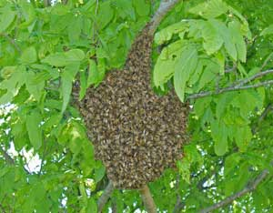

If you’ve ever thought about beekeeping, I strongly encourage you to jump in and get started. There are continually new things to learn, observe and enjoy. It brings you close to nature, and bees pollinate crops and provide honey.
I enjoy beekeeping now even more than I did in 2005, my first year of keeping bees. That first year, I followed most recommendations from books and classes, even if I was uncomfortable with them. Then in 2007, three-quarters of the honeybees in Ohio died from colony collapse disorder, including one of my two hives, and I became bolder about trusting my own instincts. The result has been that I enjoy beekeeping much more, and the number of beehives I have has increased from two to eight.
I think it’s important to read, meet other beekeepers through your local bee association, listen to their speakers, and even find a mentor for your first year. But I would encourage you to experiment and deviate from conventional wisdom, if you’re so inclined. In my experience, chemicals or artificial food supplements are not necessary. The following strategies have worked for me and will help you enjoy beekeeping right from the start.
Mite infestations are the primary reason chemicals are routinely used in beehives. I stopped all chemicals after my first year, and now I dust the bees with powdered sugar to help them groom off the mites. The bottoms of my hives are made of screen so that the mites fall through as the bees remove them (and can’t easily get back to the bees). Honeybees continue to live with mites, but gradually build sufficient resistance to stay healthy.
Bees forage over a 2-mile radius, so it’s difficult to protect them from all chemicals. Remind your neighbors that insecticides kill bees, which are necessary for pollination. It may help to bribe neighbors with a jar of honey.
It sounds like common sense to allow the bees enough of their own honey and pollen to feed their young and stay healthy. But many people take the honey and honeycomb for profit and expect the bees to live on sugar water. If you want healthy bees, allow them the fruits of their labor. Healthy bees will make enough honey for you, too.
Bees are used commercially to pollinate a single crop at a time, such as almonds. But bees need variety to make their own foods from nectar and pollen, and to maintain a strong immune system. City dwellers have the advantage of neighbors with flowers and gardens.
Bees motivate me to keep planting. Our orchard has fruit trees, daffodils, white clover, comfrey and berries. Annual flowers fit in the vegetable garden, and I plant only sunflowers that have pollen (varieties that don’t produce pollen are available). Buckwheat is our autumn cover crop, and its nectar is far superior to sugar water for the bees’ winter food.
Used beehives and frames can easily harbor disease and chemicals. Buy new beekeeping supplies to assure a clean start. Basic beginning bee supplies, including safety gear, start at about $160. A honey extractor costs around $300, but can be shared or rented.
A package of bees with a queen bee costs about $80. I suggest buying new equipment and asking another beekeeper to help find a swarm. Besides saving money, a swarm consists of local bees that have their own queen and are healthy enough to have already multiplied. (When a colony becomes too large, it produces another queen and the colony divides.)
I feel good contributing to the honeybees’ health, and living with bees enhances my world. I become calm and centered in the apiary surrounded by the hum of the honeybees. I’m also grateful for their delicious raw honey. Life is definitely better with bees.
|
 MARY LOU SHAW The word “swarm” may cause panic, but the bees are gentle during this time. |
|
|